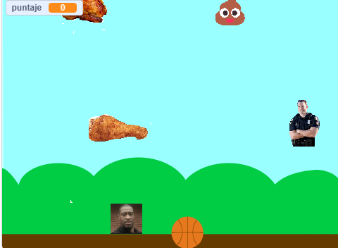
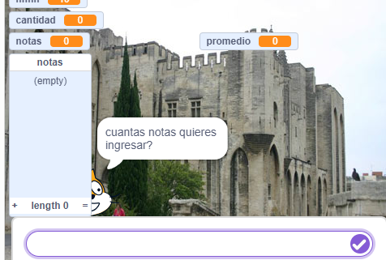

Estudiante del colegio el belloto, 18 años de edad
Me gusta mucho la musica, ir al gimnasio, tocar guitarra
Espero poder aprender bien a programar paginas web
He trabajado lo basico en Pseint, Scratch, Excel y VisualStudio Code, me gustaria aprender Python
1. "Comedor de pollos" Es un juego de scratch, juegas a ser un afroamericano consiguiendo las cosas que marcan este estereotipo. https://scratch.mit.edu/projects/1165945161/

2. "Calculador de notas" Es una herramienta para calcular notas de estudiantes



| Ciudad | Curso | Comida fav | Lenguaje fav |
|---|---|---|---|
| Villa alemana | 4to medio | Lasaña | Pseint |